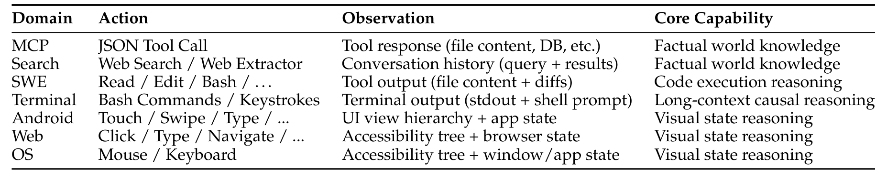
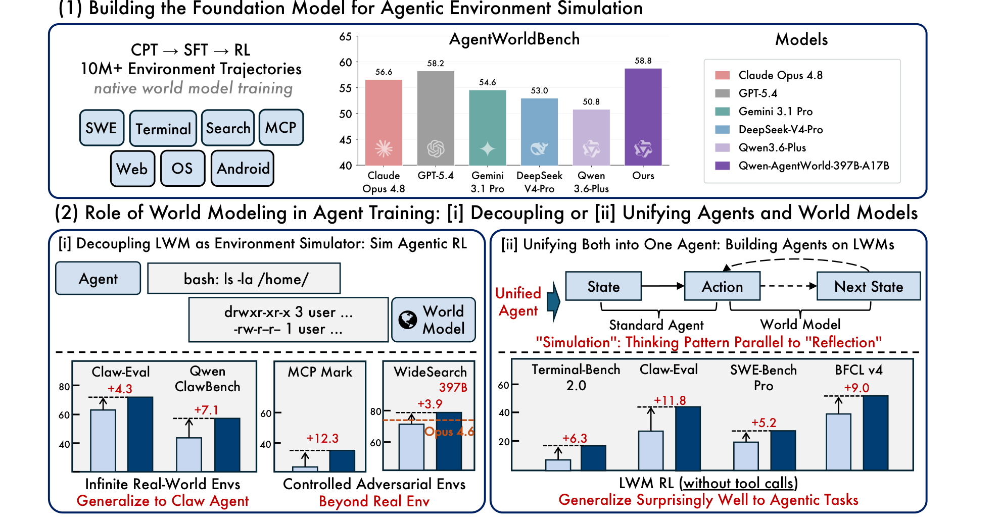

Qwen-AgentWorld
基础 —— 为什么需要语言世界模型？
理解世界模型与策略模型的分工、Qwen-AgentWorld 的七大领域，以及 Decouple 与 Unify 两种范式。
为什么需要语言世界模型？
在智能体与环境的交互循环中，两个互补组件缺一不可：
- 策略（policy）：把状态映射为动作，即 "看到什么就做什么"。
- 世界模型（world model）：把 "状态 + 动作" 映射为 "下一状态"，即 "做了之后环境会变成什么样"。
当前大语言模型（LLM）智能体的研究几乎只聚焦在策略一侧。本模块解释：世界模型不仅是"有用"的，而是通向通用智能体过程中必要的缺失拼图。
世界模型（World Model）
只有能预测环境反馈，智能体才能在做动作之前进行内部推演。
世界模型是一个条件文本生成器：给定交互历史和当前动作，预测下一个环境观察（observation）。形式化地，语言世界模型 LWM $f_θ$ 输出：
其中 c 是系统提示，$o_t$ 是第 t 步的观察，$a_t$ 是第 t 步的动作。训练目标就是真实观察 $o_{t+1}$。
Source: Qwen-AgentWorld, §2.3
仅策略智能体训练（Policy-only Agent Training）
只优化动作会让智能体学会"行动"，但学不会"预见后果"。
仅策略智能体训练：只优化状态到动作的映射，没有显式的下一状态预测。智能体学会行动，但无法预见自己行为的后果。
Source: Qwen-AgentWorld, §1
| 维度 | 仅策略智能体 | 世界模型增强智能体 |
|---|---|---|
| 维度 | 仅策略智能体 | 世界模型增强智能体 |
| 核心目标 | 最大化任务奖励 | 预测下一状态 + 最大化任务奖励 |
| 典型失败 | 重复犯错，直到环境惩罚 | 在行动前预判错误 |
| 规划 horizon | 单步或启发式 | 通过心智模拟做多步规划 |
| 可扩展性 | 受限于真实环境访问 | 可通过模拟 rollout 扩展 |
| 训练数据 | 智能体轨迹 | 环境轨迹 + 智能体轨迹 |
Qwen-AgentWorld 的七大领域
Qwen-AgentWorld 把七类交互环境模拟统一到一个语言世界模型中。下表列出每个领域的动作表示、观察表示，以及下一状态预测所锻炼的核心能力。

有状态环境 vs. 无状态环境
不同环境的状态维护方式不同，但 LWM 都以相同的观察序列作为输入。
有状态环境 vs. 无状态环境：在无状态环境（如 Search）中，状态隐含在对话历史中；在有状态环境（如 Terminal、OS）中，存在随动作演化的显式内部状态。无论哪种情况，LWM 都基于同一套观察序列进行预测。
Source: Qwen-AgentWorld, §2.3
两种互补范式：Decouple 与 Unify
Qwen-AgentWorld 探索了把世界建模用于增强语言智能体的两条互补路径。

Decouple（解耦 / 模拟器）
把世界模型独立出来，可以获得规模化和可控性。
Decouple（模拟器）：世界模型作为独立的环境模拟器，策略智能体与世界模型是两套模型。这种方式带来两个优势：
- 可扩展性（scalability）：无需专用基础设施即可在 turn 级别扩展多样化环境。
- 可控性（controllability）：可以有针对性地注入扰动，暴露智能体弱点。
Source: Qwen-AgentWorld, §6.1
Unify（统一 / 基础模型）
让同一个模型既选动作又预测状态，能把世界建模内化为推理习惯。
Unify（基础模型）：同一个模型既负责选择动作，也负责预测环境状态。世界模型训练作为一种 "热身"（warm-up），通过预测驱动的动作细化来提升下游智能体表现。下一状态预测被内化为一种面向未来的元级思考模式，类似于 "反思"，但方向朝前。
Source: Qwen-AgentWorld, §6.2
什么时候选择 Decouple，什么时候选择 Unify？
视角
依据：基于可扩展性、可控性、基础设施复杂度和推理内化的权衡。
选择 Decouple 当：
- 需要把环境规模扩展到真实基础设施无法支撑的程度（例如数千个并行训练环境）。
- 需要可控模拟，以注入针对性扰动或构建虚构世界。
- 模拟器与智能体的最优架构或规模不同。
选择 Unify 当：
- 希望智能体把心智模拟内化为推理习惯。
- 偏好基础设施简单（一个模型而非两个）。
- 同一模型规模足以同时满足策略和世界模型质量要求。
Source: Qwen-AgentWorld, §1, §6
模块小结
- 世界模型预测环境动态；对通用智能体而言，它在理论上是必要的（Richens et al., 2025）。
- Qwen-AgentWorld 覆盖七大领域（MCP、Search、Terminal、SWE、Android、Web、OS），用统一的文本表示跨域建模。
- Decouple（模拟器）与 Unify（基础模型）是两条互补路径，分别对应 "外部规模化模拟" 和 "内部推理内化"。
视角练习：你正在设计一个科研智能体，它需要读论文、跑实验、写报告。你会把它做成 Decouple 系统（独立的世界模型模拟器）还是 Unify 系统（单一智能体基础模型）？
作者视角
依据：取决于瓶颈是可扩展的模拟基础设施，还是内化的推理能力。
- Decouple 适合：需要大量廉价的模拟论文评审或实验设计 rollout 来压力测试智能体，或模拟器可被多个智能体变体共享。
- Unify 适合：智能体在真实部署时必须自带类世界模型的预判能力，且维护两个大模型不现实。
没有 universally 最优解；成熟流程可能在训练阶段用 Decouple，在推理阶段用 Unify。
检查点：你能解释为什么下一状态预测是通用智能体的必要认知机制，并用一个具体用例对比 Decouple 与 Unify 吗？